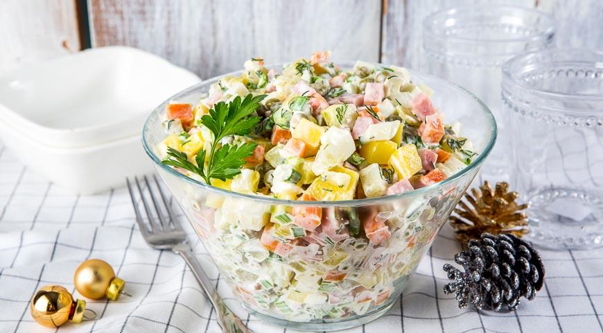
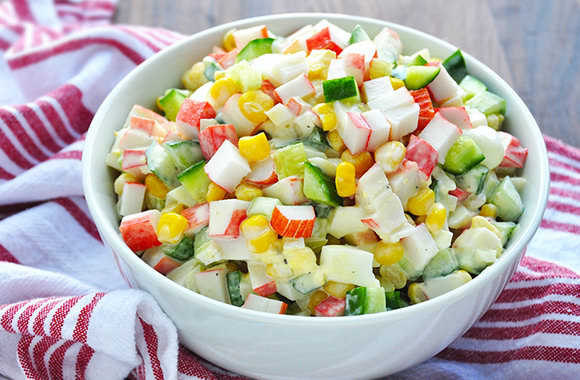
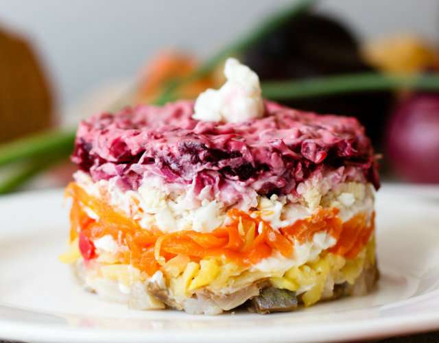
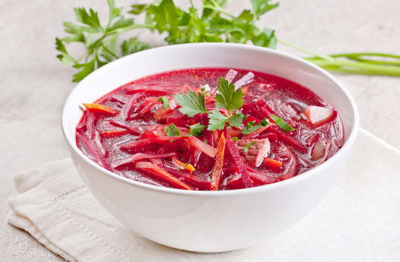
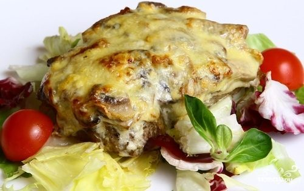
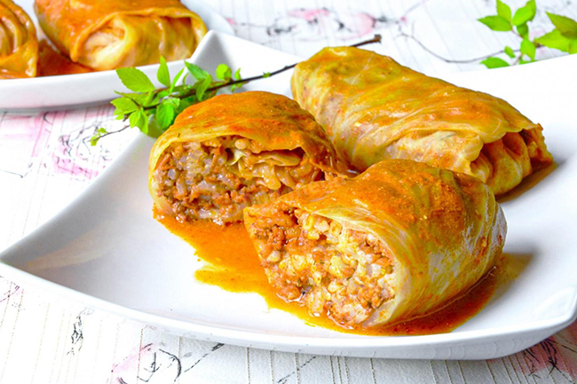
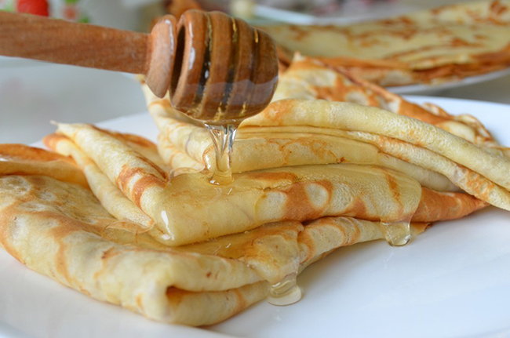
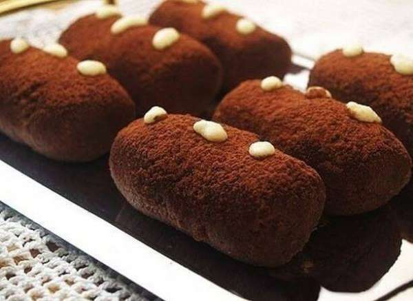

Recipes
Hello, this is my personal website of Russian traditional dishes. Have a look and get closer to the Russian culture.
Salads
Russian Salad

What will you need to cook a proper Russian salad (and not that mayo thing, you call a Russian salad)
- - Fresh cucumber - 1 big
- - Pickles - 1 jar
- - Ham - 1 kg
- - Boiled eggs - 10
- - Boiled Potatoe - 3
- - Green peas (canned and soft)
- - Boiled carrot - 1
- - Mayonnaise on your taste (I normally put about 300 grams)
- - Pepper on your taste
- - Salt on your taste
How to cook it:
- 1. Boil eggs.
- 2. Boil potatoes and carrot. You can boil them together.
- 3. Chop ham, eggs, potatoes, carrot, cucumber and pickles.
- 4. Put all the ingredients into a big plate.
- 5. Add mayo, salt and pepper.
- 6. Mix everything.
- 7. Let is stay over a night or 8 hours.
Voilà! You have a traditional Russian salad. Enjoy!
Crab salad

One more interesting traditional Russian salad.
To cook it you will need:
- - Crab sticks - 600 grams
- - Canned sweet corn - 2 jars
- - Boiled eggs - 6
- - Boiled rice - 100 grams
- - Onion - 1 small
- - Fresh cucumbers - 2
- - Mayonnaise - 200 grams
How to cook it:
- 1. Boil rice.
- 2. Boil eggs.
- 3. Chop all the ingredients in small cubes.
- 4. Put all the ingredients into a big plate
- 5. Add mayo, salt and pepper.
- 6. Mix everything.
- 7. Let is stay over a night or 8 hours.
Voilà! You have a traditional Crab salad. Enjoy!
Dressed herring

One more interesting traditional Russian salad. I bet you think it's a cake.
To cook it you will need:
- - Boiled beet root - 1
- - Boiled carrot - 1
- - Boiled eggs - 2
- - Boiled potatoe - 1
- - Onion - 1 small
- - Marinated herring - 200 grams
- - Mayonnaise - 200 grams
- - Pepper on your taste
- - Salt on your taste
How to cook it:
- 1.Boil potatoe, carrot and beet root.
- 2. Boil eggs.
- 3. Put all the ingredients on a round plate by layers.
First goes herring, then onion, then potatoe, then aggs, then carrot and last but not least is beet root.
- 4. Put mayo on all the sides.
- 5. Let is stay over a night or 8 hours.
Voilà! You have a traditional Dressed. Enjoy!
Soups
Borscht

A traditional Russian soup known all over the world.
To cook it you will need:
- - Beef - 500 grams
- - Potatatoes - 4
- - Onion - 1
- - Carrot - 1
- - Beet root - 3
- - Cabbage - 1 small head
- - Garlic - 4 heads
- - Tomato paste - 2 table spoons
- - Vinegar - 1 table spoon
- - Water - 3/4 litters
- - Pepper on your taste
- - Salt on your taste
How to cook it:
- 1. Boil the beef.
- 2. Add pilled and cut in cubes potatoe to the boiled beef.
- 3. While you wait for potatoe to boil, chop and fry onion and carrot till golden color.
- 4.Add chopped garlick. Let it fry for 2-3 minutes.
- 5. Add beet root and the vinegar. Fry for 2-3 minutes.
- 6. Add tomato paste and fry for 5-7 minutes.
- 7. Put everything in the boiled beef and potatoes.
- 8. Add cabage and boil 7-10 minutes.
- 9. Add salt and pepper.
Voilà! Your traditional Borscht is ready. Enjoy!
Ukha
A traditional Russian fish soup.
To cook it you will need:
- - Fish (any you like) - 1 kg
- - Potatatoes - 2
- - Onion - 1
- - Carrot - 1
- - Garlic - 2 heads
- - Water - 3/4 litters
- - Pepper ans spices on your taste
- - Salt on your taste
How to cook it:
- 1. Boil the fish with onion together. Ps. if you cook from red fish add half of the lemon.
- 2. Add pilled and cut in cubes potatoe to the boiled fish.
- 3. While you wait for potatoe to boil, chop and fry carrot till it's ready.
- 4. Add chopped garlick. Let it fry for 2-3 minutes.
- 5. Once the fish is ready, take out the boiled onion.
- 6. Put everything in the boiled fish and potatoes.
- 7. Wait till it the water starts to boil.
- 8. Add salt and pepper.
Voilà! Your traditional Ukha is ready. Enjoy!
Beet root soup

A traditional Russian soup cooked of beet roots.
To cook it you will need:
- - Beef - 500 grams
- - Potatatoes - 4
- - Onion - 1
- - Carrot - 1
- - Beet root - 5
- - Garlic - 4 heads
- - Tomato paste - 2 table spoons
- - Vinegar - 1 table spoon
- - Water - 3/4 litters
- - Pepper on your taste
- - Salt on your taste
How to cook it:
- 1. Boil the beef.
- 2. Add pilled and cut in cubes potatoe to the boiled beef.
- 3. While you wait for potatoe to boil, chop and fry onion and carrot till golden color.
- 4. Add chopped garlick. Let it fry for 2-3 minutes.
- 5. Add beet root and the vinegar. Fry for 2-3 minutes.
- 6. Add tomato paste and fry for 5-7 minutes.
- 7. Put everything in the boiled beef and potatoes. Cook for 7-10 minutes.
- 8. Add salt and pepper.
Voilà! Your traditional Beet root soup is ready. Enjoy!
Second dishes
Captain meat

A traditional Russian dish cooked of beef and lots of cheese.
To cook it you will need:
- - Beef - 1 kg
- - Potatatoes - 5
- - Parmesan cheese - 150 grams
- - Mozzarella cheese - 150 grams
- - Garlic - 2/3 heads
- - Mayonnaise or yogurt on your taste
- - Pepper on your taste
- - Salt on your taste
How to cook it:
- 1. Cut beef in steaks.
- 2. Cut potatoes on round slices.
- 3. Pill both cheeses.
- 4. Switch on oven for 180 degrees.
- 5. Put potatoes as a first layer on a backing sheet.
- 6. Put beef as a second layer.
- 7. Mix cheese, garlic and mayonnaise/yogurt.
- 8. Put cheese on top of beef as a third layer.
- 9. Add salt and pepper.
- 10. Put in the oven for 20 minutes or till cheese gets backed.
Voilà! Your traditional Captain meat is ready. Enjoy!
Meatballs
Traditional Russian meatballs.
To cook it you will need:
- - Beef - 500 grams
- - Pork - 500 grams
- - Onion - 1
- - Egg - 1
- - Bread white - 150 grams
- - Wheat flower for breading
- - Pepper on your taste
- - Salt on your taste
How to cook it:
- 1. Make minced meat from beef and pork. Mix them.
- 2. Grate onion. Mix with minced meat.
- 3. Edd egg.
- 4. Edd bread white.
- 5. Add salt and pepper for your taste. Mix everything.
- 6. Make meat balls.
- 7. Bread them in the wheat flower.
- 8. Fry.
Voilà! Your traditional Meatballs are ready. Enjoy!
Cabbage rolls

Traditional Cabbage rolls.
To cook it you will need:
- - Beef - 250 grams
- - Pork - 250 grams
- - Tomatoes - 300 grams
- - Rice - 150 grams
- - Bouillon or water - 1 litter
- - Cabbage - 1 head
- - Carrot - 1
- - Onion - 1
- - Pepper on your taste
- - Salt on your taste
How to cook it:
- 1. Make minced meat from beef and pork. Mix them.
- 2. Chop carrot and onion.Fry together till golden color.
Add garlick and fry 2-3 minutes more.
- 3. Boil rice.
- 4. Mix minced meat, rice and fried vegetables.
- 5. Disassemble the cabbage into leaves.
Put the mix minced meat with vegetables on the leaves.
6. Rool cabbage rolls.
- 7. Fry rolls in a frying pan.
- 8. Fried rolls put into a pan, add bouillon/water and tomatoes.Stew under the cover for 40-60 minutes.
Voilà! Your traditional Cabbage rolls are ready. Enjoy!
Desserts
Blini

A traditional Russian dessert. Usually served for breakfast.
To cook it you will need:
- - Eggs - 2
- - Sour milk/yogurt - 250 grams
- - Boiled water - 250 grams
- - Wheat flower - 400 grams +/-
- - Sugar - 1 table spoon
- - Salt - 1/4 tea spoon
- - Butter - around 20 grams
How to cook it:
- 1. Boil water.
- 2. Mix eggs with milk/yogurt.
- 3. Add boiled water.
- 4. Add salt and sugar.
- 5. Add wheat flower. Check the the consistency of the mass.
must be thick, but pouring.
- 6. Heat the frying pan.
- 7. Take a full ladle of the mass and pour it on the frying pan. Try to make a circle.
- 8. Fry the blin from both sides till golden color.
- 9. Once it's ready put it on a plate and put a small piece of butter on top.
- 10. Reapeat with each one.
Voilà! Your traditional Russian Blini are ready. Serve it with honey pr jam or whatever you like. It's good with everything. Enjoy!
Rum ball

A traditional Russian dessert. Usually served for breakfast.
To cook it you will need:
- - Shortbread - 300 grams
- - Canned sweet milk - half can
- - Butter - 100 grams
- - Cacao - 2 table spoon
How to cook it:
- 1. Grind shortbread.
- 2. Mix canned sweet milk and butter.
- 3. Mix grind shortbread and the sweet mass.
- 4. Put cacao on a plate, add a peace of the dough paste and mold it in a shape of a sausage.
- 5. Reapeat with each one.
- 6. Once all molded, put in the fridge at least for 2 hours.
Voilà! Your traditional Rum Balls are ready. Enjoy!
Oladyi
A traditional Russian dessert. Usually served for breakfast.
To cook it you will need:
- - Wheat flower - 240 grams
- - Kefir - 250 grams
- - Egg - 1
- - Sugar - 2 table spoons
- - Salt on your taste
- - Oil - 3 table spoons
How to cook it:
- 1. Mix eggs with sugar and salt.
- 2. Warm up a bit the kefir.
- 3. Mix egg mass with warm kefir.
- 4. Mix the mass with wheat flower.
- 5. With a table spoon put the mass on the frying pan.
- 6. Fry from both sides till golden color.
Voilà! Your traditional Russian Oladyi are ready. Enjoy!